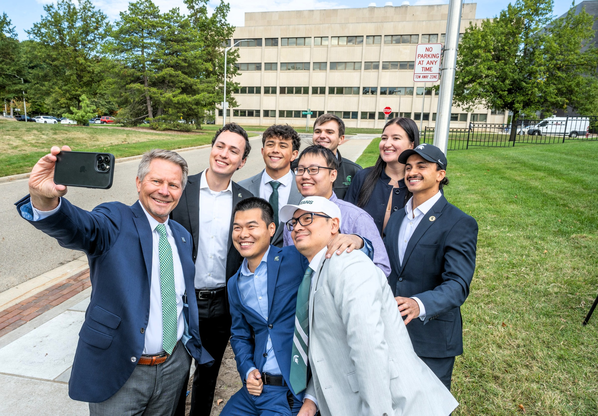
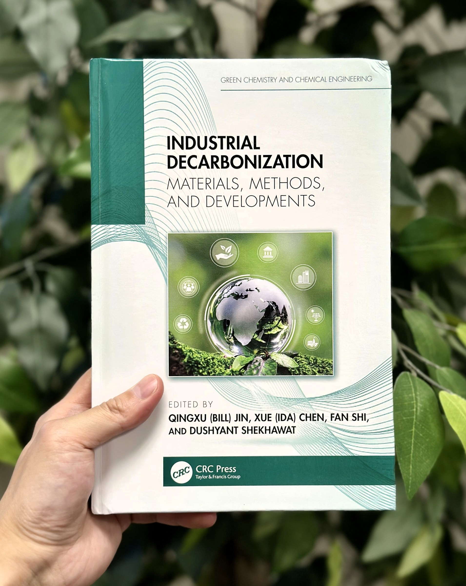
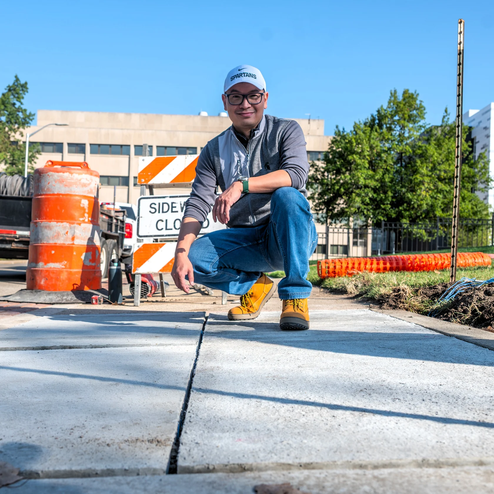
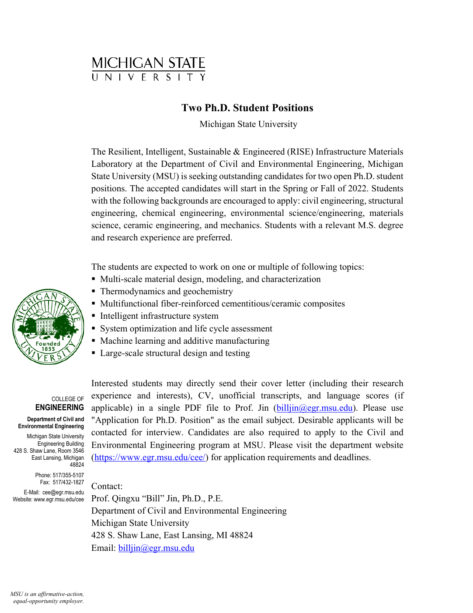
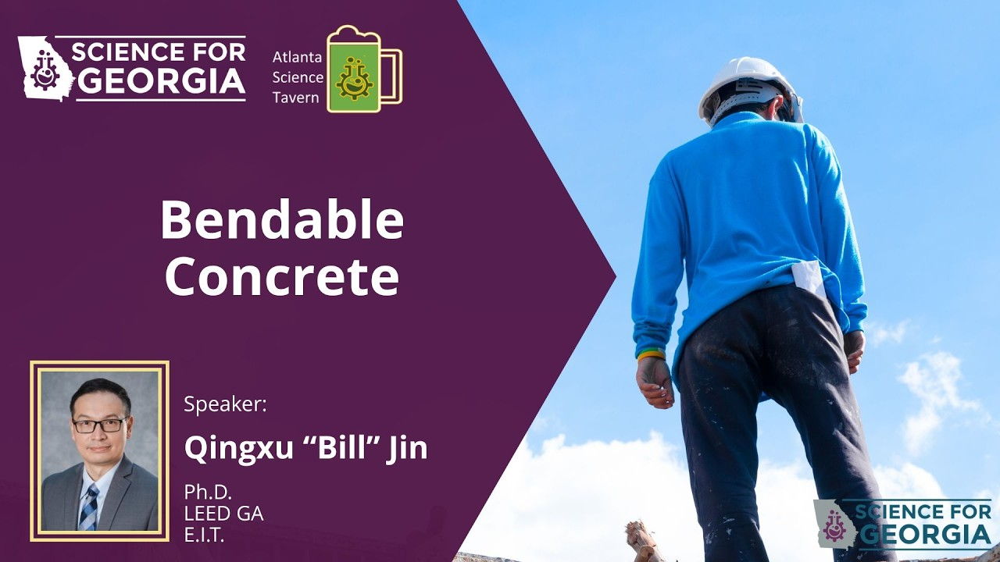

LAB NEWS
Ideas in motion.Lab news.
Research, student accomplishments and updates from the RISE community.
FROM THE LAB
News and stories.
Explore selected updates from the laboratory archive and Michigan State University.
2026

POSITION OPENED 2026-11-02 · OPPORTUNITIES
Postdoctoral opportunities at RISE
RISE is recruiting postdoctoral scholars in advanced materials for energy infrastructure and resource resilience.
Read story →
2026-10-21 · RESEARCH
Phase-change materials and concrete
Can concrete store heat without giving up strength? That’s the central question behind our new State-of-the-Art Review in American Society of Civil Engineers’s…
Read story →
2026-10-19 · PEOPLE
Klay Li becomes a Ph.D. candidate
Congratulations to Yinjian “Klay” Li on passing his PhD comprehensive exam last week 🎉 ! Officially a PhD candidate at our RISE Materials Lab.
Read story →
2026-09-24 · ALUMNI
RISE alumni begin new chapters
After a summer of big moves, I'm really proud to see that all of our RISE Materials Lab alumni (postdoc, PhD, MS and undergrad) have landed great positions and…
Read story →
2026-08-31 · PEOPLE
First group meeting of fall 2026
First day and first group meeting of the fall semester at the RISE Materials Lab! A warm welcome to Lauren Abernathy, a first-year Honors College…
Read story →
2026-08-25 · RESEARCH
Desert sand in cement-based materials
📄 New collaborative publication from RISE Materials Lab out in the Journal of Materials in Civil Engineering (American Society of Civil…
Read story →
2026-08-10 · PEOPLE
Summer updates and new lab members
As the summer semester comes to a close, exciting updates are happening at the RISE Materials Lab at Michigan State University Department of Civil and Environmental…
Read story →
2026-07-14 · RESEARCH
AI-aided ductile well cement
🎉 Thrilled to share the latest publication from our RISE Materials Lab — also selected as the front cover article in ACS Omega (ACS Publications) from American…
Read story →
2026-07-06 · RESEARCH
Lunar and Martian regolith research
📄 New publication out in npj Space Exploration (Nature Portfolio)! "Assessing the Cementitious Reactivity of Lunar and Martian Regolith Simulants for…
Read story →
2026-06-29 · RESEARCH
Rare earths across secondary feedstocks
📄 New publication out in Chem Circularity by Cell Press! "Resource Accessibility of Rare Earths Across Secondary Feedstocks". Rare earth elements (REEs) power the…
Read story →
2026-06-22 · PEOPLE
Matias Leon-Miquel defends his Ph.D.
Congratulations to Dr. Matias Leon-Miquel on successfully defending his PhD dissertation today, marking the second PhD graduate from our RISE Materials Lab! 🎉 "To…
Read story →
2026-06-15 · AWARDS
ARPA-E IGNIITE award ceremony
Concrete that bends. Withstands extreme heat and cold. Heals itself.🔥Now imagine a future where America's geothermal wells, pipelines, and power plants are built on…
Read story →
2026-05-21 · PEOPLE
Welcoming Minseok Nam
Exciting updates from our RISE Materials Lab! ✨ As kicking off summer 2026, we are excited to welcome our newest PhD student, Minseok Nam, to Michigan State…
Read story →
2026-05-06 · PEOPLE
Celebrating RISE Ph.D. graduates
A full-circle moment for our RISE Materials Lab. 🎓 Last week, I had the incredible honor of hooding my first two PhD students, Xiaoqiang Ni and Matias Leon-Miquel.…
Read story →
2026-04-24 · PEOPLE
Undergraduate researchers at Design Day
Another proud moment today for our RISE Materials Lab! 🟢⚪️ It was an absolute joy to see two of our outstanding undergraduate researchers, Nathan Denning and Kelly…
Read story →
2026-04-22 · PEOPLE
Xiaoqiang Ni defends his Ph.D.
Huge congratulations to Dr. Xiaoqiang Ni on successfully defending his PhD dissertation today. 🎓 Antonio marks a significant milestone as the first PhD student to…
Read story →
2026-04-19 · AWARDS
Matias Leon-Miquel receives instructor award
The RISE Materials Lab is proud to celebrate Matias Leon-Miquel for receiving the 2026 Outstanding CEE Instructor Award! Great to see our lab members being recognized…
Read story →
2026-01-22 · AWARDS
Dr. Jin selected for ARPA-E IGNIITE
I’m thrilled to share that I’ve been selected by Advanced Research Projects Agency-Energy (ARPA-E) for the 2025 Inspiring Generations of New Innovators to Impact…
Read story →2025

2025-11-13 · RESEARCH
Industrial Decarbonization book
Thrilled to share the release of our new book "Industrial Decarbonization: Materials, Methods, and Developments", published by CRC Press (Taylor & Francis Group).📗…
Read story →
2025-10-10
Field demonstration on the MSU campus
Four concrete slabs using different mixtures were installed to begin real-world testing of self-heating and self-healing bendable concrete.
Read story →
2025-08-22 · RESEARCH
Natural hazards and bendable concrete
Buildings of the future may not need to break under natural hazards. 🌍🏗️ Excited to share our new publication in Materials and Structures: “Seismic and wind…
Read story →
2025-04-15 · PEOPLE
Spring 2025 team update
Wrapping up the semester with a proud RISE Materials Lab group photo! 📸 🎓 Congratulations to Xiaoqiang Ni (Antonio) on earning his M.S. We are excited that he is…
Read story →
2025-04-14 · AWARDS
Madelyn Grant receives student service award
Congratulations to our undergraduate research assistant, Madelyn Grant, on winning the 2024-2025 Undergraduate Student Service Award! This recognition is…
Read story →
2025-04-14 · RESEARCH
Circular economy for infrastructure recovery
Excited to share our new publication in The Journal of Sustainability 🌱 Grateful to our newly joined research associate Brandon Byers for leading this effort on…
Read story →2024

2024-12-21 · HISTORICAL · ILLUSTRATIVE PHOTO
🚨 Postdoctoral Research Opportunities in the RISE Group 🚨
Our RISE Infrastructure Materials Research Group at MSU is seeking multiple highly motivated Postdoctoral Research Associates to join our dynamic team. These…
Read story →
2024-12-02
RISE Student Featured on MSU Today Student Views
Nathan Denning, an undergraduate student on the RISE Team, was recently featured in the Student Views section of MSU Today. Nathan spoke about his experiences…
Read story →
2024-12-02
Novel RISE Technology Featured on MSU Today
Recently, MSU Today published an article about a new technology being developed in the RISE Lab: a self-healing, self-heating bendable concrete. This…
Read story →
2024-12-02
Commitment to Community: Dr. Jin joins Inaugural MSU Bus Tour
Earlier this fall, Dr. Jin joined MSU President Kevin M. Guskiewicz and multiple other MSU faculty on the first Spartan Bus Tour. Throughout the tour, they…
Read story →
2024-11-30
Summer 2024: RISE Students at Department of Energy (DOE) National Labs
This past summer, two RISE students had incredible opportunities at different Department of Energy (DOE) national labs:
Read story →
2024-11-25
RISE at ACerS's Advances in Cement-Based Materials Conference
Multiple members of the RISE team attended the American Ceramic Society's (ACerS) Advances in Cement-Based Materials Meeting at Columbia University (New York, NY).
Read story →
2024-11-25
RISE Student Featured in CEE Spotlight
Matias Leon-Miquel, a RISE Ph.D. student, was featured on the MSU Department of Civil and Environmental Engineering's LinkedIn page! Read more about it here:…
Read story →
2024-11-18
RISE Student Awarded Best Poster at 2023 Engineering Graduate Symposium
Xiaoqiang "Antonio" Ni, a RISE Ph.D. student, was recently awarded Best Poster at the 2023 Engineering Graduate Symposium. Antonio presented his project titled:…
Read story →2022

2022-08-01
New Review: A review of existing codes and standards on design factors for UHPC placement and fiber
Ultra-high-performance concrete (UHPC) has been extensively researched and implemented in various infrastructure applications for its superior structural and…
Read story →
2022-08-01
New Publication: NOx uptake capacities and sequestration pathways by hydrated cementitious phases
This study seeks to quantify NOx sequestration by individual hydrated cementitious phases (C-S-H, AFm-SO4, and Ca (OH)2), establish a fundamental understanding…
Read story →2021

2021-11-16
New Publication: Sustainable cementitious composites containing high-volume regenerative biosilica
To promote diatom-based biofuel productions in clean energy, this paper explores the potential of using biosilica as a renewable and regenerative byproduct from…
Read story →
2021-07-02 · HISTORICAL
Open Ph.D. student positions
The Resilient, Intelligent, Sustainable & Engineered (RISE) Infrastructure Materials Laboratory at the Department of Civil and Environmental Engineering,…
Read story →
2021-02-24
Lightweight ultra-ductile cementitious composite for tall wind turbine towers
Recently, concrete (especially high strength concrete) is considered the most suitable material for building tall wind turbine towers. However, concrete is prone…
Read story →
2021-02-24
Enhanced NOx sequestration by aluminate-rich cement
We have demonstrated that the TiO2-modified calcium aluminate cement (CAC)-based materials exhibit a more permanent NOx binding compared to portland cement…
Read story →2020

2020-10-07
How do specific surface area and particle size distribution change when granular media dissolve?
Fig. 1. Incremental change in specific surface during dissolution for a granular medium with two particle sizes having a size ratio of β, given that the number…
Read story →
2020-09-20
Tavern: Bendable Concrete
With increasing worldwide urbanization, the urban population has increased from 700 million in 1950 to 4.2 billion in 2018. The urban population comprises 55% of…
Read story →2018

2018-11-05
Research approach for robust, resilient, sustainable and smart (R2S2) infrastructure systems
My integrative research approach links material design to structural behavior within the context of systems-level performance and life cycle analysis (LCA).…
Read story →
2018-02-20
Can concrete sequester NOx?
Photocatalytic cementitious materials, by incorporating anatase titanium dioxide (TiO2) nanoparticles, can effectively remove smog-producing nitrogen oxide…
Read story →
2018-02-20
Ultra-high-ductile fiber reinforced cementitious material (FRCM)
Ultra-high-ductile FRCM, as an effective alternative for construction material, looks and feels like normal concrete, however exhibits an unusual ductile…
Read story →